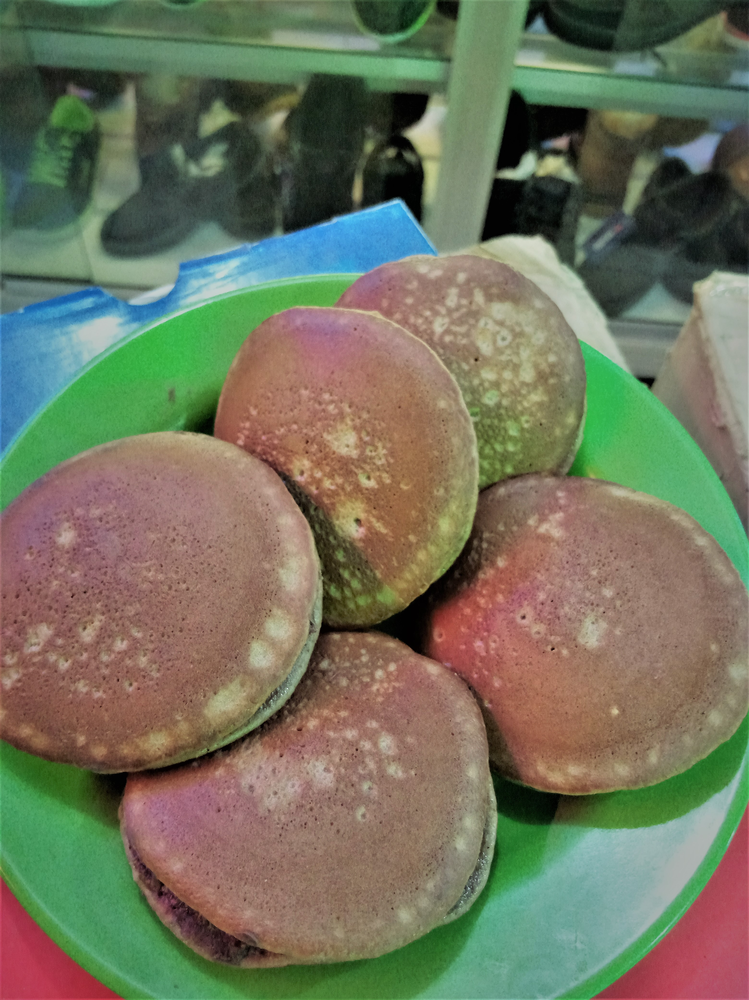

CARA MEMBUAT DORAYAKI

Berikut bahan-bahan yang dibutuhkan:
- 2 butir telur ayam (bukan telur punya elu)
- 40gr/4 sdm gula pasir
- 1 sdm madu (tidak disarankan untuk rakyat jelata)
- 1/2 sdt vanili (biar wangi dorayakinya)
- 90 gr/9 sdm tepung terigu (kalo lu orang kaya pake yg segitiga biru, klo enggak ya jangan)
- 1 sdt baking powder (biar ngembang kue nya)
- 10 ml/2 sdm air putih (bisa diganti dengan susu cair, bukan susu itu..!!)
untuk cara membuatnya klik "LINK"ini